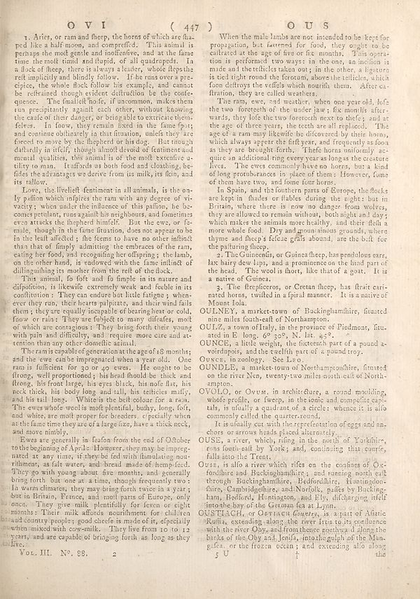

Source · scan and Parse blocks
Layers 3

Parse text by block reading order
- 0Title**OYI ( 447)** **OUS**
- 1Text1. Aries, or ram and fleep, the horos of which are flu- ped like a half moon, and compreffed. This animal is perhaps the molt gentle and notifintive, and at the fame time the molt timid and fliquid, of all quadrupeds. In a flock of fleep, there is always a leader, whole flesh the cell amplified and blindly follow. If the men over a precipice, the whole flock follow his example, and cannot be reiftained though evident defiruation be the confe- engence. The finalist buffs, if uncommon, makes them run precipitantly against each other, without knowing the cause of their danger, or belogable to extricate them, folves. In favor, they remain fixed in the fate fots and continue disbursing in this situation, under they are forced to move by the flhepherd or his dog. But through daftally in itself, though altro devoid of feminine and mental qualities, this animal is of the molt extective uitality to man. It infacts on both the and climbing, fer- files the advantages we derive from its milk, its flow, and its rollow.
- 2TextLove, the lifeliftentment in all animals, is the on- ly pathion which infiples the ram with any degree of vi- vacity; when under the influence of this pallon, he bo- come prettien, more significant and sometimes even attacks the flhepherh himself. But the ew, so fit- male, though in the fame litution, does not appear to be in the last affected; it the items to have no other difficult than that of simply admitting the embraces of the ram, eating her food, and recognizing her offspring; the lamb, on the other hand, is endowed with the fame inflint of diliguishing its means from the self of the dock.
- 3TextThis animal, fo fo and lo simple in its nature and disposition, is likewise extremely weak and feeble in its condition: They can endere but little fingers when ever they ran, their hearts pute, and their wind falls there, they are equally incapable of clearing her or cold, fawor or rain: They are fuject to many difades, molt of which the consensus: They bring forth their young with pain and difficulty, and require more care and attention than any other scientific animal.
- 4TextThe rains capable of generations at the aged 18 months; and the cow carbe impregnated when a year old. One ram is sufficient for go or upo even. He ought to be flrog, well proportioned; his head should be thick and floreg, his front large, his eyes block, his mole fits, his neck thick, his body long and tall, has articles muffy, and his tail long. White is the belt colour for a ram. The ew whose wool is molt plentiful, bulhy, long, fot, and white, the most proper for breeders. Especially when at the fame time they are of a large size, have a thick neck, and move rimbly.
- 5TextEwes are generally in fields from the mof of the obber to the beginning of April. However, they may be impeg- nated as any time, it they be fed with illuminating non- rilmen, as fat water, and bread made of hem-feed. They go with your about, few months, and generally bring forth, but one at a time, though frequently two. In warm climates, they may bring forth twice in a year, but in Britain, France, and molt parts of Europe, only enough. They goes milk plentyfully for tenx or eight minutes: Their milk affords mouthments for children broad country people; good checefe is made of it, especially women mixed with cow-milk. They live from 10 to 12 thyvers, and are capable of bringing forth an long as they tailites.
- 6Page-footer_Vol. III._ No. 28. 2
- 7TextWhen the mile limbs are not intended to be keys for propagation, but farmed for food, they might to be calibrated at the age of five or fix months. This operation is performed two ways: in the one, an inclion is made and the facilities taken on; in the other, a liature is tied by around the forearm, above the facilities, which foot deftroys the veffels which nourish them. After ca- affirates, they are called wearless.
- 8TextThe new, ewes, and weather, when one year old, lofs the two foreseeh of the under jaw; fix months after- wards, they lofe the two foreseeh next to thele; and at the age of three years, the teeth are all replaced. The age of a ram may likewise be delivered by their home, which always appears the left year, and frequently saboon as they are brought forth. Their horse uniformly ac- quite an additional ring every year as longer the creature lives. The ews commonly have an horses, but a kind of long protubrances in place of them: However, fome of them have two, and some four hors.
- 9TextIn Spain, and the Southern passa of Europe, the flocks are kept in thudes or fiables during the night; but in Britain, where there is now no danger from wolves, they are allowed to remain without; both adult and day; which make the animals more healthy, and their dish a more whole food. Dry and mountainous grounds, where thyme and fleep's fefea grafs abound, are the built for the patturing fleep.
- 10Text2. The Guinemands, or Guinea fleep, has pendulous ears, lax hairy dew lips, and a prominence on the hind part of the head. The weol is short, like that of a goat. It is a native of Guinea.
- 11Text3. The fireplaces, or Cretan fleep, has fruit ceri- nated horses, twilled in a firal manner. It is a native of Mount folia.
- 12TextOULENEY, a market-town of Buckinghamshire, situated nine miles South-east of Northampton.
- 13TextOULC, a town ofItaly, in the province of Piedmont, litu- used in E, long, of 950, N. list, ages.
- 14TextOUNCE, a little weight, the fitteenth part of a pound a- voirdupois, and the wealth part of a pound troy.
- 15Textcancer, in azobby. See Leo.
- 16TextOUNDELE, a market town of Northamptomhire, fituated on the river Nen, twenty-two miles north-caf of North- ampons.
- 17TextOVOLLO, or Ouvus, in architecture, a round moulding, whole profile, or fweep, in the ionic and compacite capit- tals, is usually a quadrant of a circle; whence it is also commonly called the quartercard.
- 18TextIt is mainly cut with the reproduction of eggs and an- chors or arrows heads placed alternately.
- 19TextOuss, a river, which, riding in the north of Yorkshire, runs fourth-rail by York; and, combining that course, falls into the Trent.
- 20TextOUSTLAGH, or Oertrain _Scores_, is a part of Afatrie "Rouis, extending along the river Iris to its confluence with the river Obv, and frontienne pushway along the birds of the Oby and Jenis, into the gulph of the Man- gutes, or the frozen ocean; and extending alo along
- 21Page-footer5 U 1
Provenance page_id, checksum, Parse model
- page_id
- britannica:309f765b1ecc83e0a7f7762e44b4a927a7555443:train:713
- sha256
- 3db0c66f81f48bd0948a7644d3f0c1c4213d3d49e54c500a317bf147695b1fc5
- Parse
- nvidia/nemotron-3.5-parse · finish stop